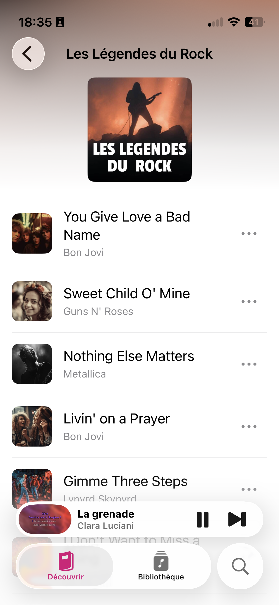

Leçon 3 · Navigation et listes
On relie enfin les Leçons 1 et 2 : taper une playlist pousse un écran de liste, taper une chanson ouvre la fiche que tu as déjà construite. Et on introduit List, le vrai équivalent SwiftUI d'un UITableView.
DiscoverView (Leçon 1) et SongOptionsSheet (Leçon 2) existaient chacun de leur côté, testés en isolation via Preview. Un vrai écran de navigation, c'est justement ça : des vues qu'on relie. Cette leçon ferme la boucle et introduit List et NavigationLink(value:), les deux briques qui manquaient pour naviguer entre elles.

List — l'équivalent SwiftUI de UITableViewLa Leçon 1 a utilisé ScrollView(.horizontal) + LazyHStack pour la rangée de playlists — un choix délibéré quand tu veux un contrôle total sur la mise en page (cartes larges, scroll horizontal). Pour une liste verticale de lignes uniformes comme des chansons, SwiftUI a un composant dédié : List. C'est l'équivalent le plus proche d'un UITableView — séparateurs automatiques, style de ligne cohérent avec le reste d'iOS, et prêt à recevoir des actions de balayage (.swipeActions) ou de suppression plus tard, sans code supplémentaire.
List(playlist.songs) { song in
Button {
selectedSong = song
} label: {
SongRow(song: song)
}
.buttonStyle(.plain)
}
.listStyle(.plain)List(playlist.songs) exige que Song soit Identifiable — déjà le cas depuis la Leçon 2. Chaque ligne est un Button plutôt qu'un simple Text parce qu'on veut réagir au tap ; le réflexe .buttonStyle(.plain) de la Leçon 2 s'applique encore ici, sinon List ajoute sa propre coloration de sélection par-dessus ton contenu.
Playlist gagne des chansonsLa Playlist de la Leçon 1 n'avait qu'un titre et des couleurs de dégradé. Comme en développement réel, on l'enrichit au fur et à mesure des besoins plutôt que de tout réécrire :
struct Playlist: Identifiable, Hashable {
let id = UUID()
let title: String
let gradientColors: [Color]
let songs: [Song]
}On ajoute aussi Hashable — Swift le génère automatiquement puisque toutes les propriétés (UUID, String, [Color], [Song]) le sont déjà, à condition que Song le soit aussi :
struct Song: Identifiable, Hashable {
let id = UUID()
let title: String
let artist: String
let year: Int
let duration: String
let key: String
}Il faut mettre à jour mockPlaylists (Leçon 1) pour donner un tableau songs à chaque playlist — vide pour les trois existantes, rempli pour la nouvelle "Légendes du Rock" qu'on ajoute :
let mockPlaylists: [Playlist] = [
Playlist(title: "Best Of", gradientColors: [.orange, .pink], songs: []),
Playlist(title: "Années 2000\nen France", gradientColors: [.blue, .red], songs: []),
Playlist(title: "Karaoké\nClassics", gradientColors: [.yellow, .brown], songs: []),
Playlist(title: "Légendes\ndu Rock", gradientColors: [.black, .orange], songs: [
Song(title: "You Give Love a Bad Name", artist: "Bon Jovi", year: 1986, duration: "03:35", key: "Cm"),
Song(title: "Sweet Child O' Mine", artist: "Guns N' Roses", year: 1987, duration: "05:56", key: "Dm"),
Song(title: "Nothing Else Matters", artist: "Metallica", year: 1991, duration: "06:28", key: "Em"),
Song(title: "Livin' on a Prayer", artist: "Bon Jovi", year: 1986, duration: "04:09", key: "Dm"),
Song(title: "Gimme Three Steps", artist: "Lynyrd Skynyrd", year: 1973, duration: "04:31", key: "A"),
]),
]NavigationLink(value:) + navigationDestination(for:)Dans PlaylistSection — la vue qui contient déjà le ForEach sur les playlists (Leçon 1) — on enveloppe chaque PlaylistCard dans un NavigationLink(value:). La déclaration de la destination, elle, se fait une seule fois, sur le NavigationStack qui vit dans DiscoverView :
ScrollView(.horizontal, showsIndicators: false) {
LazyHStack(spacing: 14) {
ForEach(playlists) { playlist in
NavigationLink(value: playlist) {
PlaylistCard(playlist: playlist)
}
.buttonStyle(.plain)
}
}
.padding(.horizontal)
}// Sur le NavigationStack de DiscoverView, à côté de .navigationTitle
.navigationDestination(for: Playlist.self) { playlist in
PlaylistDetailView(playlist: playlist)
}C'est le remplaçant moderne (iOS 16+) de l'ancien NavigationLink(destination:) qui embarquait la vue de destination directement dans chaque ligne. Séparer "quelle valeur" de "quelle vue afficher pour cette valeur" évite de construire toutes les destinations à l'avance — utile pour la performance sur de longues listes, et pour déclencher une navigation depuis du code (pas seulement un tap), ce qu'on fera dans une leçon future.
PlaylistDetailView — l'écran completstruct PlaylistDetailView: View {
let playlist: Playlist
@State private var selectedSong: Song?
var body: some View {
VStack(spacing: 0) {
PlaylistCoverHeader(playlist: playlist)
List(playlist.songs) { song in
Button {
selectedSong = song
} label: {
SongRow(song: song)
}
.buttonStyle(.plain)
}
.listStyle(.plain)
}
.navigationTitle(playlist.title)
.navigationBarTitleDisplayMode(.inline)
.sheet(item: $selectedSong) { song in
SongOptionsSheet(song: song)
}
}
}
struct PlaylistCoverHeader: View {
let playlist: Playlist
var body: some View {
LinearGradient(colors: playlist.gradientColors, startPoint: .topLeading, endPoint: .bottomTrailing)
.frame(height: 220)
.overlay {
Text(playlist.title)
.font(.title2.bold())
.foregroundStyle(.white)
.multilineTextAlignment(.center)
.padding()
}
}
}
struct SongRow: View {
let song: Song
var body: some View {
HStack(spacing: 12) {
RoundedRectangle(cornerRadius: 8)
.fill(.quaternary)
.frame(width: 50, height: 50)
VStack(alignment: .leading, spacing: 2) {
Text(song.title)
Text(song.artist)
.font(.subheadline)
.foregroundStyle(.secondary)
}
Spacer()
}
.padding(.vertical, 4)
}
}.sheet(item:) — la variante qui manquait à la Leçon 2, et où l'accrocherLa Leçon 2 mentionnait .sheet(isPresented:), qui a besoin de deux informations séparées : un booléen "faut-il afficher ?" et une donnée "laquelle afficher ?". Ici, on n'a besoin que d'une seule source de vérité : @State private var selectedSong: Song?. nil = rien à afficher, une valeur = affiche la feuille pour cette chanson.
Ce modificateur s'accroche sur la VStack racine du body de PlaylistDetailView — juste après .navigationBarTitleDisplayMode(.inline), au même niveau que les autres modificateurs de l'écran :
var body: some View {
VStack(spacing: 0) {
PlaylistCoverHeader(playlist: playlist)
List(playlist.songs) { /* ... */ }
}
.navigationTitle(playlist.title)
.navigationBarTitleDisplayMode(.inline)
.sheet(item: $selectedSong) { song in // ← ici, sur la VStack
SongOptionsSheet(song: song)
}
}.sheet(item:) exige que le type soit Identifiable (encore Song) : SwiftUI l'utilise pour savoir si la feuille doit se refermer/rouvrir quand la valeur change. C'est plus simple à maintenir qu'un booléen et une variable "chanson courante" séparés — un seul état, pas deux à garder synchronisés.
VStack, et pas sur la List ou dans SongRow ?selectedSong est un @State qui appartient à PlaylistDetailView — n'importe quelle vue à l'intérieur de son body peut porter le modificateur .sheet, qu'elle lise ou non directement cette variable. Ici, poser .sheet sur la List aurait fonctionné tout aussi bien : ce qui compte n'est pas la vue précise choisie, mais qu'elle appartienne au corps de la vue qui possède l'état. À l'inverse, tu ne peux pas poser ce modificateur dans SongRow : cette vue ne connaît pas selectedSong, elle ne fait que déclencher sa mutation via la closure du Button dans PlaylistDetailView.
didSelectRowAt n'existe plus — et c'est tant mieuxEn UIKit, sélectionner une ligne de UITableView passe par une méthode déléguée séparée (tableView(_:didSelectRowAt:)), déconnectée de la construction de la cellule. Ici, l'action de tap vit directement à côté du contenu de la ligne, dans le même bloc — plus besoin de retrouver la bonne donnée à partir d'un IndexPath.
| UIKit | SwiftUI |
|---|---|
UITableView + UITableViewCell | List |
tableView(_:didSelectRowAt:) | Action inline dans le contenu de la ligne (ex. Button) |
NavigationLink(destination:) (ancien, iOS 15 et moins) | NavigationLink(value:) + .navigationDestination(for:) |
present(_:animated:) avec une donnée à transmettre | .sheet(item:) |
List, NavigationLink, navigationDestination(for:destination:), sheet(item:onDismiss:content:). Le tutoriel "SwiftUI Tutorials" (Landmarks) couvre ce pattern NavigationLink(value:) en situation réelle si tu veux un deuxième exemple.
1. Pourquoi utiliser List plutôt que ScrollView + LazyVStack pour la liste de chansons ?
2. Que faut-il déclarer pour utiliser NavigationLink(value: playlist) ?
3. Pourquoi .sheet(item: $selectedSong) est-il plus simple ici que .sheet(isPresented:) ?
4. Quel protocole doit adopter Playlist pour être utilisée comme valeur de NavigationLink(value:) ?
La navigation ne se déclenche pas au tap, ou la feuille s'ouvre avec la mauvaise chanson ? Vérifie d'abord que .navigationDestination est bien sur le même NavigationStack que le NavigationLink — une erreur fréquente est de le poser sur la mauvaise vue. Demande à ton agent si besoin.